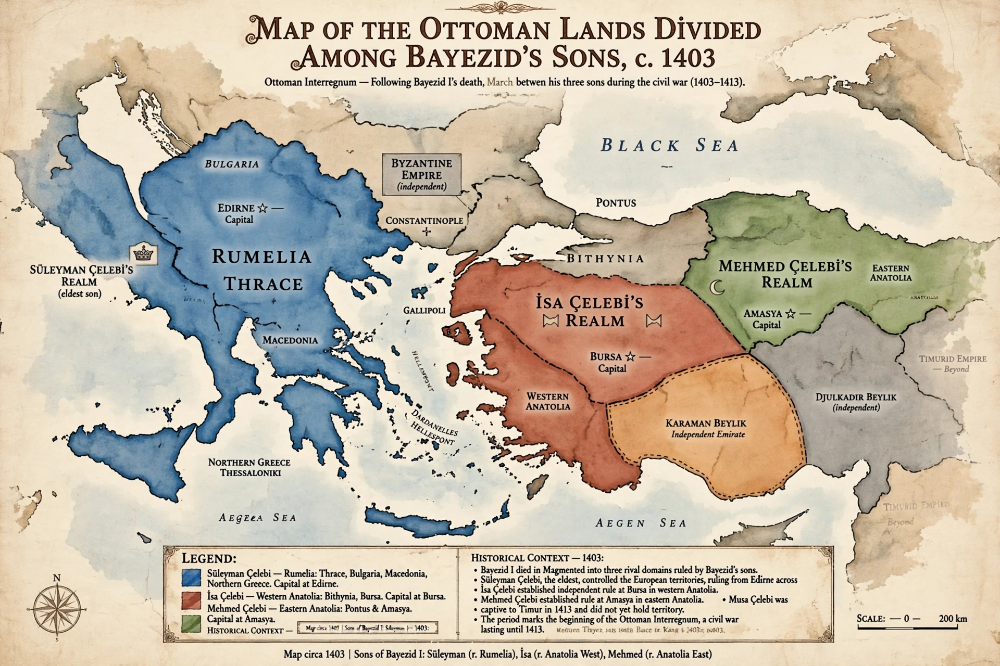

| Ottoman Interregnum | |
|---|---|
| Period | 20 July 1402 – 5 July 1413 |
| Turkish name | Fetret Devri |
| Cause | Capture of Bayezid I at Ankara |
| Claimants | Süleyman, İsa, Musa, Mehmed (sons of Bayezid) |
| Outcome | Mehmed I reunifies the empire |
The Ottoman Interregnum (Turkish: Fetret Devri, "period of chaos"), also known as the Ottoman Civil War, was an eleven-year struggle for the throne among the sons of Sultan Bayezid I following his defeat and capture by Timur at the Battle of Ankara in 1402. It is the only extended succession civil war in Ottoman history and brought the empire to the brink of dissolution.

Timur restored the Anatolian beyliks and departed, leaving the Ottoman lands fragmented. Süleyman Çelebi held Edirne and Rumelia and bought Byzantine and Venetian support by concessions (Treaty of Gallipoli, 1403). İsa ruled from Bursa until eliminated by Mehmed, who consolidated Anatolia from Amasya. Süleyman crossed into Anatolia but was overthrown and killed in 1411 by his brother Musa, whose harsh rule in Rumelia alienated the Balkan lords. Mehmed, allied with the Byzantine emperor Manuel II and Serbian despot Stefan Lazarević, defeated and killed Musa at the Battle of Çamurlu in July 1413.
Mehmed I emerged as sole sultan and is remembered as the empire's second founder: he recovered much of Anatolia, restored central authority, and bequeathed a reunified state to his son Murad II. The interregnum's trauma shaped later Ottoman succession practice, including the institutionalised fratricide of princes.